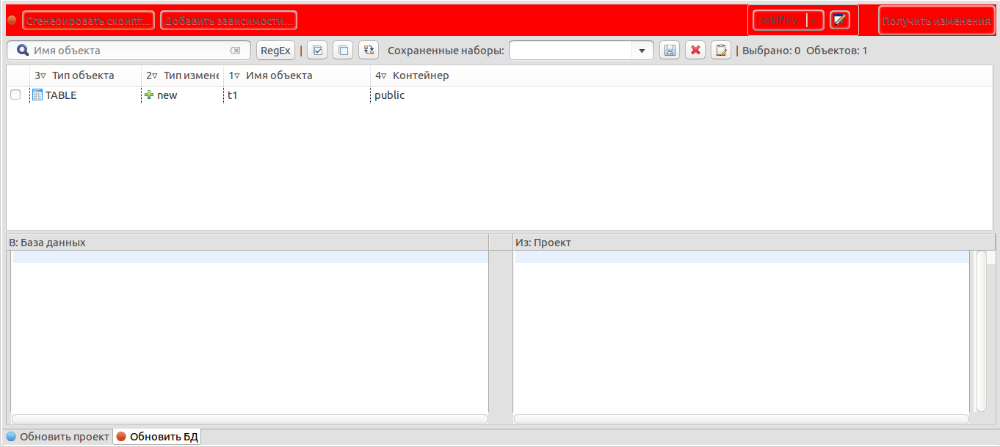

Редактор проекта pgCodeKeeper
Редактор проекта – основной способ работы с pgCodeKeeper.
Две вкладки, расположенные у нижнего края редактора, позволяют переключаться между режимом
внесения изменений в проект и режимом генерации скрипта наката изменений на БД.
Вкладки имеют схожий интерфейс, состоящий из четырех основных частей:
- Панель задач
- Панель инструментов
- Таблица различий
- Панель сравнения

Панель задач содержит набор действий для сравнения и обновления баз данных:
Получить изменения
Сгенерировать скрипт
Добавить зависимости
Применить выбранные изменения...
Панель инструментов предназначена для работы со списком объектов. Они имеют следующее предназначение:
 – выбрать все элементы
– выбрать все элементы – снять выбор со всех элементов
– снять выбор со всех элементов – инвертировать выбор элементов
– инвертировать выбор элементов- Выпадающий список с сохраненными наборами объектов. Позволяет восстановить выбор объектов согласно сохраненному набору.
 – сохранить набор выбранных элементов
– сохранить набор выбранных элементов – удалить текущий сохраненный набор выбранных элементов
– удалить текущий сохраненный набор выбранных элементов – копировать набор выбранных элементов в буфер обмена как регулярное выражение
– копировать набор выбранных элементов в буфер обмена как регулярное выражение- Фильтр списка объектов по имени или регулярному выражению.
Таблица различий отображает список объектов, которые различаются в сравниваемых схемах БД.
Различие может быть одного из трех видов: удаление, создание или изменение объекта.
В зависимости от типа различия, объекты в списке изменений помечаются как delete, new и edit соответственно.
Панель сравнения показывает изменения, произошедшие в SQL представлении объекта.